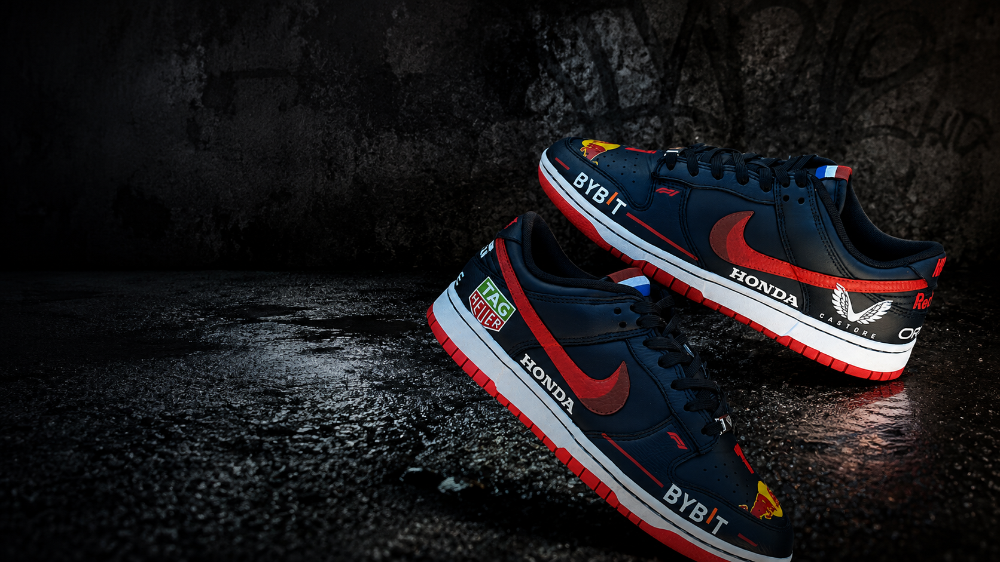
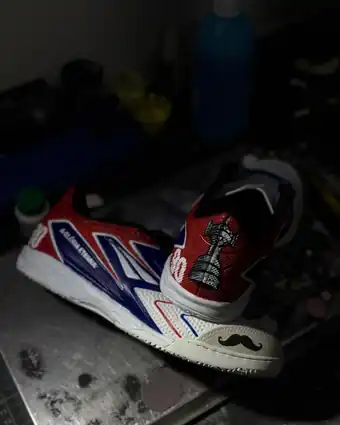
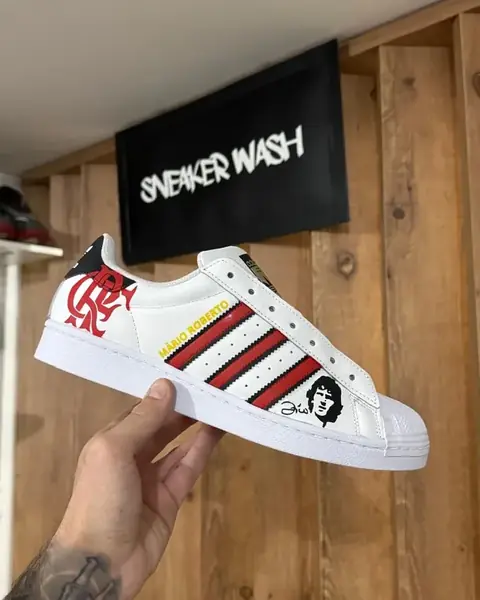

Limpeza especializada
Cuidado completo para remover a sujeira acumulada e devolver ao sneaker uma aparência muito mais limpa e renovada.
1ª lavanderia especializada em sneakers de Cascavel-PR
Limpeza especializada e customização para quem não trata sneaker como um tênis qualquer. Na SneakerWash, cada par recebe o cuidado — ou o novo visual — que merece para voltar às ruas limpo, renovado e pronto para o próximo passo.

Cada sneaker chega com uma história diferente — e também com necessidades diferentes. Por isso, antes de começar, avaliamos o par e definimos o cuidado mais adequado para cada material e cada detalhe.
Cuidado completo para remover a sujeira acumulada e devolver ao sneaker uma aparência muito mais limpa e renovada.
Cabedal, entressola, sola, cadarços e outras áreas recebem atenção individual durante o processo.
Modelos, cores e materiais diferentes exigem cuidados diferentes. Cada par é avaliado antes do processo.
Além da higienização, a SneakerWash customiza e pinta sneakers: cores novas, temas exclusivos e detalhes que ninguém mais vai ter. Cada projeto é pensado do zero, direto no nosso studio.
Quero customizar meu sneakerSeu sneaker pode estar mais longe de estar perdido do que você imagina.


Passe na SneakerWash e deixe seu par com a nossa equipe.
Avaliamos o sneaker e realizamos o processo de limpeza com atenção aos materiais e aos detalhes.
Depois da finalização, é só buscar seu sneaker e aproveitar o resultado.
A SneakerWash nasceu em Cascavel com uma proposta simples: oferecer um lugar especializado para quem realmente se importa com os seus pares.
Aqui, sneaker não é tratado como uma peça qualquer. Cada modelo, material, cor e detalhe merece atenção.
Foi assim que construímos uma comunidade com milhares de pessoas acompanhando nossas transformações e confiando seus sneakers ao nosso cuidado.
SneakerWash. Seu par em boas mãos.
Nosso trabalho é focado no cuidado de sneakers.
Cada par é analisado antes do processo.
Porque são justamente os pequenos detalhes que fazem diferença no resultado.
Você fala com quem entende do serviço e acompanha o trabalho todos os dias.
Uma empresa local para uma comunidade que leva sneaker a sério.
Aqui entram avaliações reais de clientes.
★★★★★“[Depoimento real do cliente]”
Nome do cliente
★★★★★“[Depoimento real do cliente]”
Nome do cliente
★★★★★“[Depoimento real do cliente]”
Nome do cliente
SneakerWash
Av. Toledo, 1136
Tropical — Cascavel/PR
Quer saber se conseguimos cuidar do seu sneaker? Mande uma foto para a gente.
Falar pelo WhatsAppTalvez ele só esteja precisando do cuidado certo.
Quero cuidar do meu sneaker